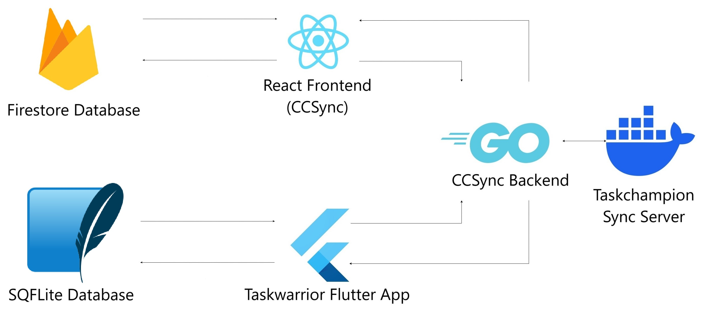

Developing for CCSync
This section gives a brief information about almost everything that you would need to setup CCSync for development, or deployment.
If you still have any queries, contact us on Github
Environment Architecture
The diagram below is a representation of how various components are connected to enable sync on the CCSync website, and the Taskwarrior Flutter App

Setting up a Development Environment
Prerequisites
-
Docker
-
Google OAuth Keys
-
Firestore Configuration
Steps to setup the frontend
-
Navigate to the frontend directory and run the command:
npm install -
Create a
.envfile in the same directory. -
If you want to use docker, set the environment variables in
.envas:VITE_BACKEND_URL="http://localhost:8000/" VITE_FRONTEND_URL="http://localhost:80" VITE_CONTAINER_ORIGIN="http://localhost:8080/" -
Else, set the environment variables in
.envas:VITE_BACKEND_URL="http://localhost:8000/" VITE_FRONTEND_URL="http://localhost:5173" VITE_CONTAINER_ORIGIN="http://localhost:8080/" -
Run the frontend container only:
docker-compose build frontend docker-compose up
Steps to setup the backend
-
Navigate to the backend directory and run the commands:
go mod download go mod tidy -
Create a
.envfile in the same directory. -
Go to Google cloud credential page for generating client id and secret.
-
If you want to use docker, set the environment variables in
.envas:CLIENT_ID="client_ID" CLIENT_SEC="client_SECRET" REDIRECT_URL_DEV="http://localhost:8000/auth/callback" SESSION_KEY="generate a secret key using 'openssl rand -hex 32'" FRONTEND_ORIGIN_DEV="http://localhost" CONTAINER_ORIGIN="http://YOUR_CONTAINER_NAME:8080/" -
Else, set the environment variables in
.envas:CLIENT_ID="client_ID" CLIENT_SEC="client_SECRET" REDIRECT_URL_DEV="http://localhost:8000/auth/callback" SESSION_KEY="generate a secret key using 'openssl rand -hex 32'" FRONTEND_ORIGIN_DEV="http://localhost:5173" CONTAINER_ORIGIN="http://localhost:8080/" -
Run the backend container only:
docker-compose build backend docker-compose up
Note: If you plan to run the backend without Docker, run it as a root user preferably on WSL or any Linux Distro with a user that has elevated permissions to modify files and directories.
Note: Setup the sync server using the official documentation provided here.
Steps to setup the Taskwarrior Flutter app with CCSync
-
For development/personal purposes, in order to use CCSync with Taskwarrior Flutter app, one needs to setup only the backend and the sync server. The frontend setup is optional.
-
Open the
api_service.dartfile. -
For baseUrl, replace
http://YOUR_IP:8000with the deployed API endpoint. -
For origin, replace
http://localhost:8080with the deployed sync server endpoint. -
Set
sync.server.originin your Taskwarrior configuration to the deployed sync server URL. -
Here's how your api_service.dart should look after these changes:
class ApiService { // Use deployed values for baseUrl and origin String baseUrl = 'http://deployed-api-endpoint.com'; // replace with actual deployed API endpoint String origin = 'http://deployed-sync-server-endpoint.com'; // replace with actual deployed sync server endpoint // Other ApiService code... } -
Run the app.
Troubleshooting
The sync might break most of the times due to wrong .env variables. Please ensure that your docker containers are
visible and accessible, using ping <container_address> commands.
Testing
- For testing backend, first navigate to the backend directory, and then run the tests
cd backend go test <package_name>
Here, package_name is the test suite you want to run.
-
Similarly, for testing frontend, first navigate to the frontend directory, and then run the tests
cd frontend npm test -
Note: In order to setup / run tests for pages that have any URLs, for example, theHomePage.tsx, toggle theisTestingtotrueinfrontend/src/components/utils/URLs.ts
Google OAuth Keys
Before starting anything, Go to Google cloud credential page for generating client id and secret. Follow these steps:
-
Go to Google's developer console.
-
Create a new project.
-
From within your project, create a new "Client ID" by going to "APIs & Auth" > "Credentials" and clicking on the "Create New Client ID" button.
-
Select "Web Application"
-
Enter the following for 'Authorized Javascript Origins':
http://127.0.0.1 http://localhost -
Enter the following for 'Authorized Redirect URI':
http://127.0.0.1:8000/callback/ -
Save
-
You will be presented with your newly generated credentials that are required for setting up the backend.
Firestore configuration
Note: This step is necessary only for the frontend setup, and can be skipped if you plan to use only the backend API with the Taskwarrior Flutter App
-
Create a new project and then setup a Firestore database.
-
Add a collection of the name tasks
-
The following fields must be there in the data model of the collection:
description (string) due (string) email (string) end (string) entry (string) id (number) modified (string) priority (string) project (string) status (string) tags (array : string) urgency (number) uuid (string) -
Add web support for you database and download the config file provided by Google, it would have this format:
import { initializeApp } from "firebase/app"; const firebaseConfig = { apiKey: "", authDomain: "", projectId: "", storageBucket: "", messagingSenderId: "", appId: "", measurementId: "" }; export const app = initializeApp(firebaseConfig); -
Download it, and store it at
frontend/src/lib/by the namefirestore.js